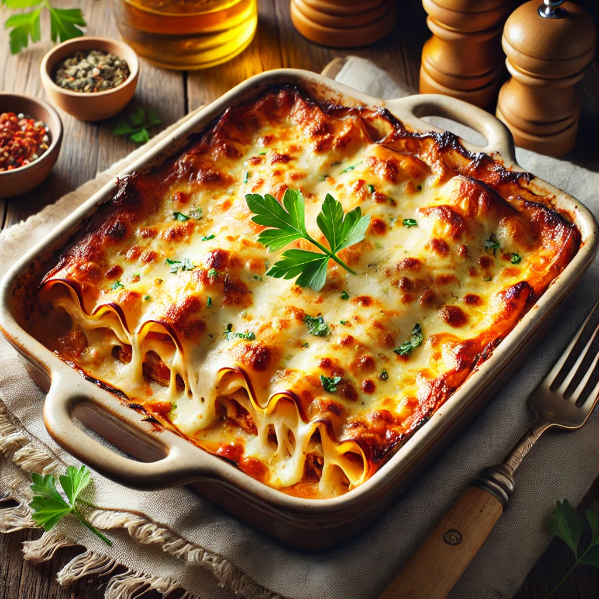

Go back to the homepage
Lasagna

Description
Lasagna is a classic Italian dish loved worldwide for its rich, comforting flavors and hearty layers. This recipe features tender sheets of pasta layered with a savory meat sauce, creamy béchamel, and a blend of melted cheeses. The golden-brown crust on top adds the perfect finishing touch to this satisfying meal.
Whether you're cooking for a family gathering or just treating yourself, this lasagna promises to deliver both warmth and indulgence. Serve it alongside a fresh green salad or garlic bread for a complete meal that will impress everyone at the table.
Ingredients
For the Meat Sauce:
- 2 tablespoons olive oil
- 1 large onion, finely chopped
- 3 cloves garlic, minced
- 500g ground beef or pork (or a mix of both)
- 2 cans (400g each) crushed tomatoes
- 2 tablespoons tomato paste
- 1 teaspoon dried oregano
- 1 teaspoon dried basil
- Salt and pepper to taste
- 1 teaspoon sugar (optional)
For the Bechamel Sauce:
- 4 tablespoons butter
- 4 tablespoons all-purpose flour
- 3 cups milk
- A pinch of nutmeg
- Salt and pepper to taste
Additional Ingredients:
- 12 lasagna sheets
- 2 cups ricotta cheese
- 2 cups shredded mozzarella cheese
- 1 cup grated Parmesan cheese
- Fresh parsley for garnish
Instructions:
Step 1: Prepare the Meat Sauce
- Heat olive oil in a large pan over medium heat.
- Sauté the onions until translucent, then add minced garlic and cook for another minute.
- Add the ground meat and cook until browned. Drain excess fat if necessary.
- Stir in the crushed tomatoes, tomato paste, oregano, basil, salt, pepper, and sugar. Let it simmer for 20 minutes, stirring occasionally.
Step 2: Prepare the Bechamel Sauce
- In a saucepan, melt the butter over medium heat.
- Add the flour and whisk continuously to form a roux. Cook for 1–2 minutes without browning.
- Gradually add milk, whisking constantly to avoid lumps. Bring to a simmer until thickened.
- Season with nutmeg, salt, and pepper.
Step 3: Assemble the Lasagna
- Preheat your oven to 180°C (350°F).
- Spread a thin layer of meat sauce at the bottom of a baking dish.
- Add a layer of lasagna sheets, followed by a layer of meat sauce, a layer of ricotta, and a layer of bechamel sauce.
- Repeat the layering process, finishing with a generous layer of bechamel on top.
- Sprinkle mozzarella and Parmesan cheese over the top.
Step 4: Bake the Lasagna
- Cover the dish with foil and bake for 25 minutes.
- Remove the foil and bake for another 15–20 minutes, or until the cheese is golden and bubbling.
Step 5: Serve
- Let the lasagna rest for 10 minutes before cutting into slices.
- Garnish with fresh parsley and serve warm.
Enjoy your delicious lasagna!